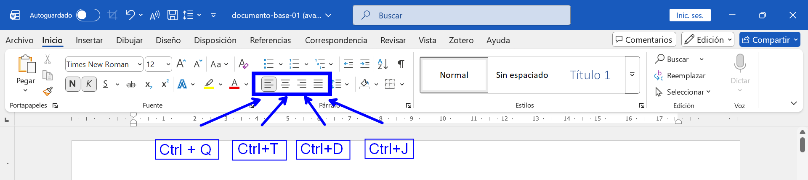
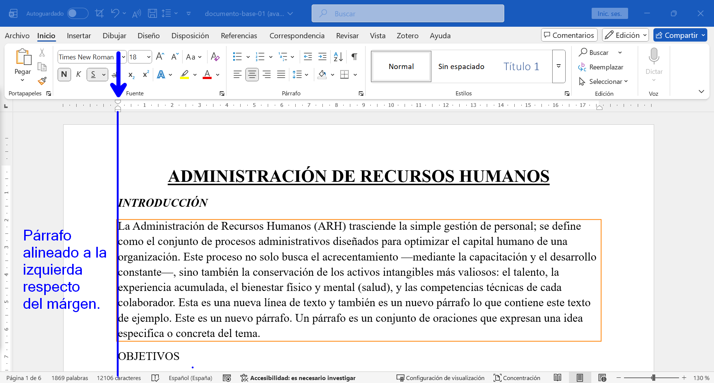
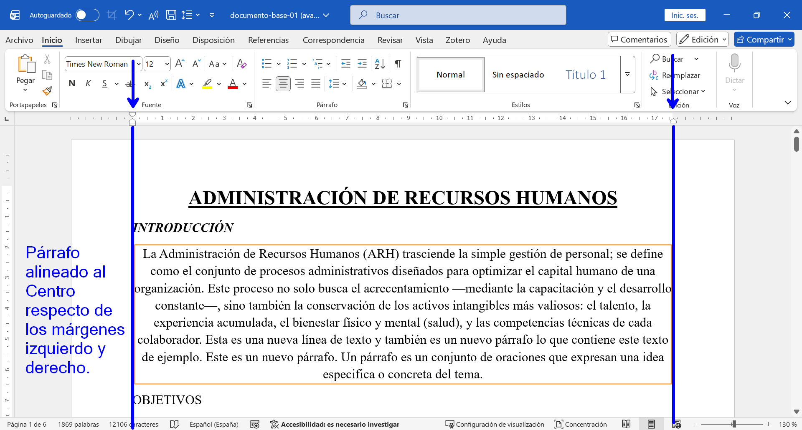
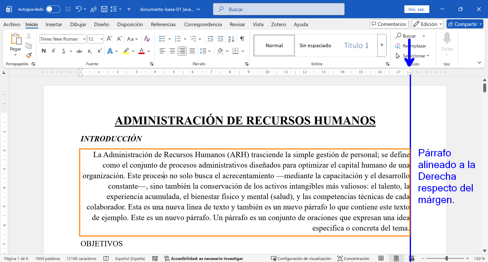
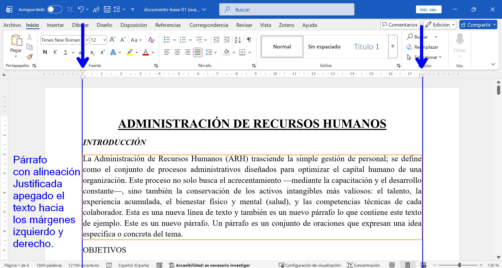
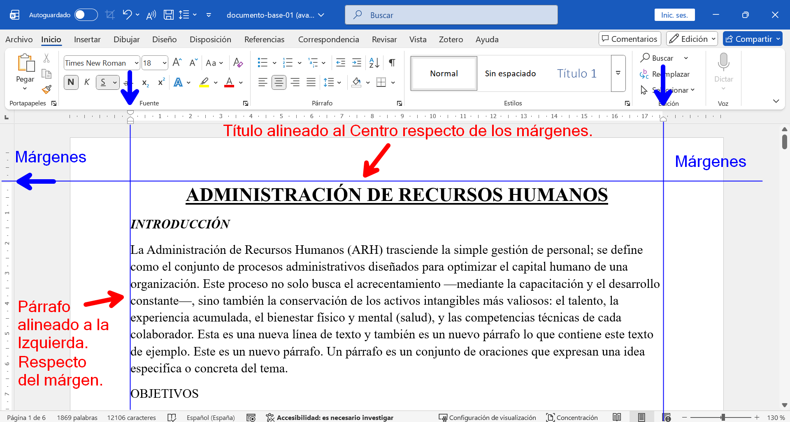

CÓMO ALINEAR TEXTO
En esta guía aprenderás cómo alinear tu texto (izquierda, centrado, derecha y justificado) para darle una mejor presentación a tus documentos en Word.
La alineación determina cómo se distribuye el texto entre los márgenes de la página. Para aplicar una alineación, los pasos son:
- Selecciona el texto o colócate en el párrafo que deseas alinear.
- Ve a la pestaña INICIO en la cinta de opciones.
- En el grupo Párrafo, haz clic en el botón de la alineación que necesites, o usa los atajos de teclado.

Tipos de Alineación
-
Alinear a la Izquierda: El texto se alinea con el margen izquierdo. Es el formato predeterminado y el más usado para escribir texto general.
Atajo de teclado: Ctrl + Q
-
Centrar: El texto se coloca exactamente en el medio de los márgenes. Se utiliza habitualmente para títulos, portadas o citas destacadas.
Atajo de teclado: Ctrl + T
-
Alinear a la Derecha: El texto se alinea con el margen derecho. Es útil para fechas, firmas o membretes cortos en la parte superior del documento.
Atajo de teclado: Ctrl + D
-
Justificar: El texto se estira automáticamente para alinearse de manera recta tanto en el margen izquierdo como en el derecho, creando bordes limpios en ambos lados. Muy utilizado en trabajos formales, revistas y libros.
Atajo de teclado: Ctrl + J
Nota: Es importante notar que la alineación se aplica a párrafos completos y toma como referencia los márgenes de la página y no así los bordes de la hoja.
